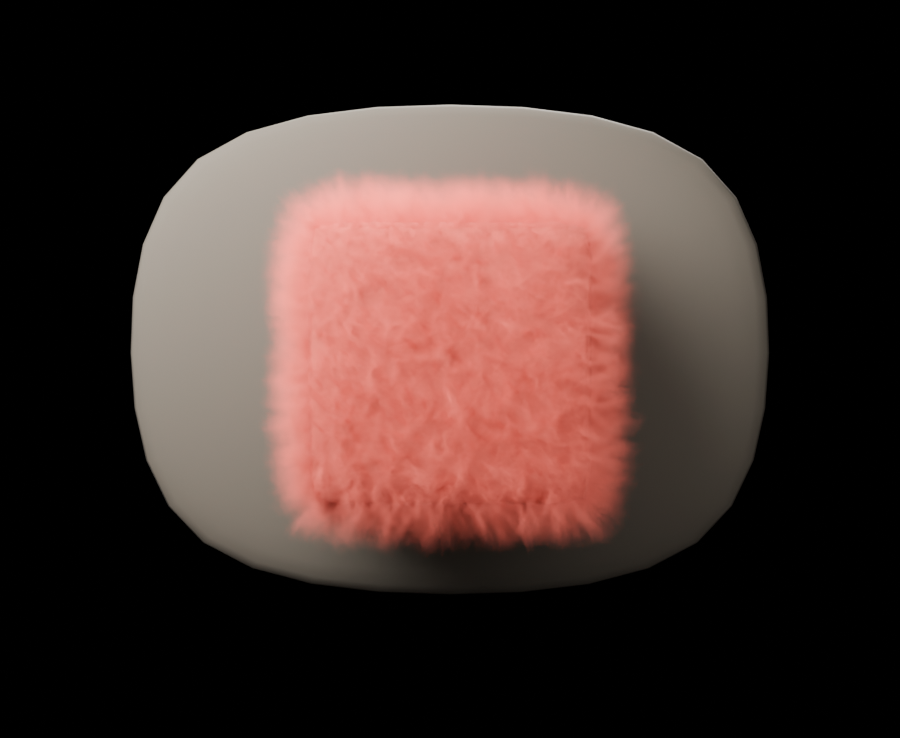
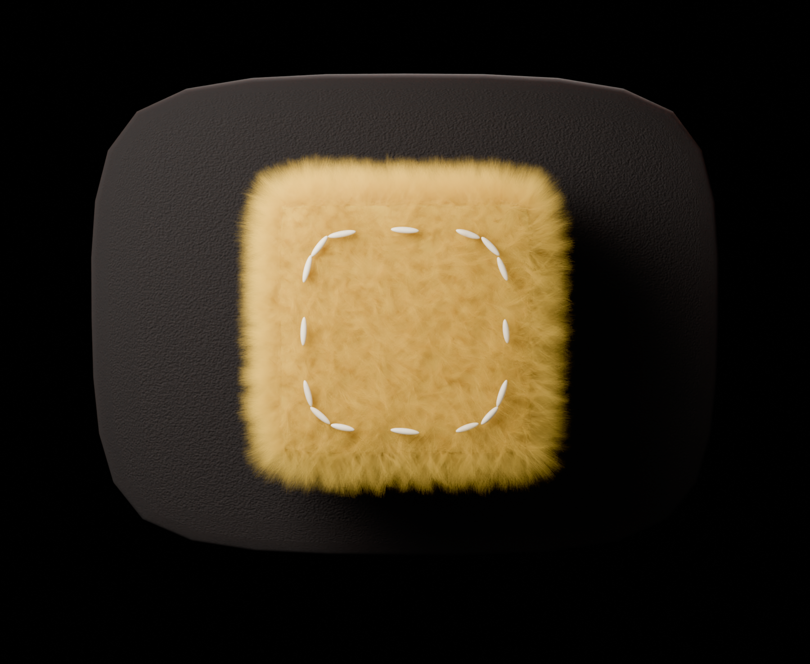

몽글에게 물어보기
강사 화면의 마지막 조각 — 서버는 서 있고, 이 문고리만 남았습니다
아래 폰의 몽글을 눌러 보세요. 시트가 올라오고, 질문 칩을 누르면 답이 바뀝니다 — 세 답변은 지어낸 것이 아니라 오늘(08-25) 리허설 서버가 실제로 낸 응답입니다. 급여 질문까지 일부러 넣었습니다 — 몽글이 어떻게 안 흘리는지 보세요.
실답 3벌 · companion v33 · 출처 침까지 서버 응답 그대로
01
입구 — 몽글은 원래 있던 자리에서 한 뼘만 큽니다
강사 홈 코너에 이미 앉아 있는 몽글이 그대로 입구가 됩니다 — 새 버튼·새 메뉴 0. 유채는 주연 Coral + 조연 Butter 둘뿐(철칙 ④).


검수함<

바트체첵 · 발화녹음대기
“오늘 시장에 가서 김치를 샀어요…”
촐로 · 게임 제출대기
서류관문 3단계 · 다시 말하기 2회
어제 검수 완료12건

뭐든 물어보세요 — 아는 건 문서 근거로, 모르는 건 원장님께 전할게요.
숙제 서클은 코어 90분 중 첫 20분에 진행하는 4인조 활동입니다. 전날 밤 학생이 앱에
제출한 숙제를 재료로 씁니다 — 앱이 조별 인쇄물 1장(조원 4명 각자의 ‘잘된 문장 1개 ·
한 번 더 볼 자리 1개 · 다음에 맞힐 문제 1개’ + 레벨별 문장틀·질문틀)을 매 차시
자동으로 만들어 링크로 보내줍니다. 흐름은 [몸풀기 2분 → 숙제 브리핑 10분 → …]
숙제 서클 설계강사 수업 규칙
소그룹 20분은 타임박스로 돕니다: 계획 1분 → 1라운드 4분 → 2라운드 3분(짝 교대) →
3라운드 2분(짝 교대) → 남은 시간 조별 정리·산출물 완성·발표 준비. 4명 1조×4조,
조·역할(진행·기록·발표·질문)·3라운드 짝은 앱이 배정하니 강사가 짤 필요 없습니다.
강사는 이 20분 동안 앉지 않습니다.
강사 수업 규칙
학생의 ‘급여’라는 항목은 저희 문서에 없습니다. 혹시 학생 ‘포인트’나 강사님
‘급여(인센티브)’를 말씀하신 건지 확인해 주시겠어요? 정확한 질문으로 다시 말씀해
주시면 답변 도와드리겠습니다.
출처 없음 → 빈칸 로그에 적재
몽글에게 물어보기…
↑
답이 문서에 없으면 그 질문은 빈칸 로그(companion_qa)에 쌓입니다 — 출처 0으로 답한 질문이 곧 다음에 쓸 문서의 일감 큐가 됩니다.
02
몽글의 작업대 친구들 — 우리가 이미 구워 둔 것들
메인은 몽글 · 나머지는 데코와 친구




03
이 시안이 정한 것 · 제안하는 것
| 자리 | 내용 |
|---|---|
| 입구 | 강사 홈 코너의 몽글 그대로 — 탭하면 시트. 새 메뉴·새 버튼 0(보조 원칙: 몽글을 꺼도 앱은 전부 돈다). |
| 첫 화면 | 추천 질문 칩 2~3(그 화면 맥락으로 서버가 고른다) + 자유 입력 한 줄. 강사가 타자 없이 두 탭으로 답을 얻는 게 기본 흐름. |
| 답의 신뢰 | 모든 답 밑에 출처 침 — 서버 응답의 cited_refs 그대로. 출처가 없으면 몽글이 지어내지 않고 확인을 되묻거나 원장님께 인계. |
| 대기 모션 | 실패 스피너 — 답을 기다리는 2~4초가 브랜드 순간이 된다(실이 감기는 동안 몽글은 눈감음). |
| 넘버쿠키 | 검수 큐 순번으로 첫 실전 배치 제안 — 큐 카드마다 쿠키 한 장, 검수를 마치면 사라진다(“오늘 쿠키 다 먹었다” = 큐 0). |
| 붕어빵·간식 | 그날 검수 완주 축하 컷 — 폼폼 터짐과 한 벌. |
유호님 픽 셋
- 입구 이대로? — 코너 몽글 탭 → 시트(이 시안) / 다른 모양이 좋으시면 말씀만.
- 넘버쿠키의 검수 큐 순번 배치 — 이 시안이 처음 제안하는 실전 자리입니다(데코 이상의 역할). 좋으면 강사 화면 트랙에 함께 싣습니다.
- 대기 모션 = 실패 스피너 — 답변 대기 2~4초의 주인. 채택 시 회전 모션은 emil 원칙(빈도 낮음 · 목적 있음)으로 굽습니다.
픽 주시면: 강사 화면에 입구 한 벌 착지(talk) → 리허설로 실사용 검증까지 한 번에 갑니다. 서버·지식·로그는 이미 서 있어 앱 코드만 남았습니다.